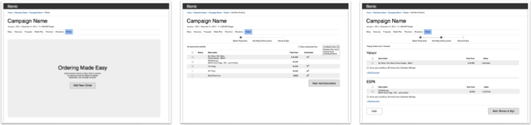
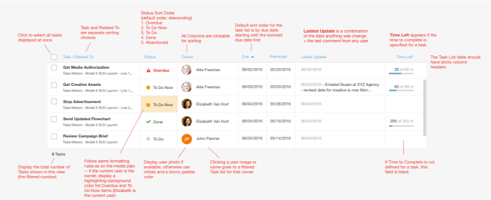
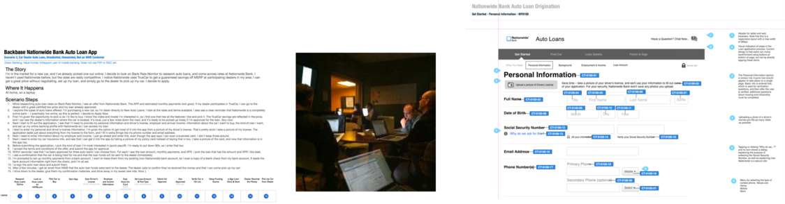

Experience
Zynga
Senior Product Manager Feb 2018 - present
- Product owner and lead designer for multiple enterprise applications. Develop requirements, design UI, and help build web-based and iOS/Android native apps for managing game builds, conducting play tests, visualizing game development roadmaps, and more
- Collaborate with producers and developers in an agile environment to deliver products that help studios develop games that connect the world, such as Words With Friends, FarmVille, and upcoming Star Wars titles
- Research user needs and understand problems, identify edge cases, write product requirements, define product roadmaps, prototype designs, and integrate feedback
- Build a team of UX designers and two UI developers to support Zynga corporate website portfolio, including zynga.com
- User research + Low-fidelity sketching and Balsamiq wireframes + High-Fidelity prototyping with HTML/CSS/JS
- Marketing/Comms/Documentation design for game tech used by global game studios
Bionic
Director, User Experience Design Mar 2014 - Jan 2018
- Lead design of the Bionic media planning suite used by content publishers and advertisers to plan and manage campaigns
- Led UX projects through ideation, critique, and implementation through on-site user research, wireframing, spec writing, and prototyping.
- Established design system to align product and engineering
Principal UX Designer / Freelance
Tim Jones Design
- Consulting & contract UX design and development projects for Yahoo, Nationwide, the University of Notre Dame, and more
Yahoo
Senior Program Manager
- Product manager and designer of the Yahoo Insights Portal, which unified data, user research, and marketing insights across the company for thousands of Yahoo employees
- Docs & information architecture for enterprise data platform products
- Organized and ran the first two Yahoo Data Conferences
- Recognized as a Yahoo “Data Wizard” for getting stuff done
Education
McGill University
Montréal, QCBA - English Literature
Georgia Tech - Professional Development
Atlanta, GAWeb Development
UC Berkeley - Extension
Berkeley, CAGraphic Design / Typography
CooperU
San Francisco, CADesign Leadership
Interaction Design
Toolbox
- UX Research / User Interviews
- Sketching
- Design Systems
- Balsamiq
- Figma
- Sketch
- HTML
- Javascript
- CSS / Sass
- Tableau
- Jira
- SQL
- Git
- svn
Recommendations
Source: linkedin.com/in/timjonesus/
"Tim is a rock star. I've seen Tim concept, code and run a half-dozen fantastic corporate apps for Yahoo! and have always been impressed with his ability to deeply understand the business requirements, translate those to functional specs, design around those, and turn them into reality with style and efficiency."
Head of Customer Insights
(former colleague / director at Yahoo)
"I couldn't have asked for a better manager. Tim's expertise, friendliness, and willingness to lend a hand or explain something complex are unparalleled. His guidance was invaluable, and the things I learned while working with him are assets I'll have for the rest of my career. Tim has the unique ability to think large-scale, without missing the small details, and keep a project focused, cohesive, and in-line with constantly evolving needs and goals."
User Interface Design Consultant
Web, UI, and Visual Designer
(former colleague & direct report)
"Tim is one of the most reliable and accommodating partners I've worked with during my tenure at Yahoo. His dedication and can-do attitude made him a valuable resource to the Products Communications team on several projects. Tim offered creative solutions, shared best practices and was always available for day-to-day assistance. Tim is truly a team player and I recommend him with the highest regard."
NASA Jet Propulsion Lab
Community Engagement Editor
(former colleague / project manager at Yahoo)
"Tim has strong talents in translating big picture business goals into tangible and valuable end results -- a great combination. He has that unique ability for quickly translating fuzzy and continuously changing business goals into technically sound working software that hits the target. He's smart, dependable, collaborative, and a seasoned professional."
Director, Technical Program Management
(former colleague / director at Yahoo)
Portfolio Samples
-
Zynga Roadmap Atlas
- Product Owner, Product Designer
- New visual identity, user research, product requirements, prototyping, frontend implementation
Building games that connect the world is complex detail-oriented work. Game developers and producers have to coordinate many moving parts to ensure everything works. In our central engineering group, we knew that we needed a better way to show people what was coming, which games were first in line to adopt new tech, and provide complete visibility into our process. We needed an easily updatable visualization of our roadmap that had clarity and could be understood by developers, product managers, and executives.
Entire companies are built around these kinds of tools, and my initial research included exploring options from Asana, ProductPlan, Pendo, and more through demos, sales calls, trial accounts, and even walkthroughs from others at Zynga who were trying out the same tools — all were excellent products but in too many instances, the complexity and onboarding was too high for broad adoption.
As I talked with producers, leadership, stakeholders, and engineers, I understood that what we needed in our situation wasn't feature-saturated third-party solution, but a straightforward way to visualize roadmaps. We already had detailed tracking because of our heavy investment in Jira but we needed a way to align stakeholders and teams.
I wrote a high-level requirements document to formalize the problem statement and define the core objectives. Because of my background in web development, I realized that we could probably show 75-80% of what we needed from a web-based app using some Javascript and a bunch of CSS. I built a prototype using HTML, Javascript, and CSS (SASS) to get feedback on. Improvements in HTML5 and maturing JS frameworks meant that creating a scrollable timeline roadmap would be a lot easier than it had been in the past. If nothing else, this would allow me to model the data in case we did move to a third-party product.
Using my prototype, I aligned stakeholders and iterated quickly based on user feedback. With buy-in from leadership, I teamed up with a developer who helped rework the app as ReactJS project. We began investigating database options. However as a way to keep momentum, we decided to use Google Sheets as the backend with a custom script to export the data as JSON. The benefits to this were (1) we didn't need to build out a database infrastructure and (2) we met users where they already worked: producers at Zynga use Google Sheets all the time to manage projects. We were able to let them update roadmap data using Google Sheets, which they loved.
-
Zynga Analytics
- Lead Designer
- New visual identity, user research, wireframing, UI design, HTML/CSS/JS prototyping
Zynga has multiple data and analytics apps, including a stats portal for reporting. These tools needed unification to better address analyst workflows. Research came first, including interviewing a variety of users such data analysts, product managers, stakeholders. I also spent time understanding and researching analytics platforms such as Tableau, SproutSocial, and to to idnetify best practices in the analytics landscape currently looked like.
Next, I worked on sketching out design and layout pattern ideas that I could circulate with a wider team. Going to back to people we had interviewed, I was able to keep stakeholders involved as we worked through the process.
After identifying designs that appeared to address user objectives, I built a clickable prototype so people could play with a tangible version and provide feedback. I was able to integrate Tableau into the UI to show how we could leverage an existing platform's features.
With designs approved, I worked with developers to implement frontend design, QA test, evaluate and prioritize feedback, and iterate. We continue to gather feedback and are continually refining the application as we dig even deeper into usage and business objectives.
-
Zynga Play App for iOS and Android
- Product Owner, Product Designer
- User research, product requirements, prototyping
Building games that connect the world means a lot of playing games - in a good way! At Zynga, a major initiative of CEO Frank Gibeau was to create a culture of play testing. Zynga is comprised of game studios across the globe who work on diverse titles such as Words With Friends (Zynga), Merge Dragons (Gram Games), and new Star Wars titles (Natural Motion), just to name a few. However, game studios don't alway know about or get to play games in development from other studios, which means they miss out on valuable feedback from expert game builders who aren't on their teams.
Zynga needed a way to make sharing games in development and collecting feedback easy. One of my first major projects at Zynga was to lead the product development of a native app for iOS and Android that allowed us to create play tests and distribute games across the company.
The target audience for Play App is diverse -- from senior C-suite leadership to QA testers to product managers and executive producers. The Play App also had to place nicely with internal automated build systems that engineers depended upon. Creating something that would work for all of these roles would take research and refinement.
The initial stages of the project involved user research and many stakeholder interviews - with dependencies across groups, the app would need inputs from different layers. Research also involved understanding the nuances and history of existing tech infrastructure.
-
Bionic Media Planner
- Design Director
- User research, wireframes, UI design, HTML/CSS/JS prototyping
Planning advertising campaigns in today's fragmented media landscape is complex work. The tools for doing the job haven't kept pace with the explosion of media possibilities, and the process has only gotten more complicated. Emails, phone calls, spreadsheets — and even FAX — are all part of what it takes to execute a modern media plan across a range of different options, including online, television, radio, newspapers, and more. Hours are dedicated to manual data entry that brings the risk of calculation errors and typos. The results are sub-optimal, and (most critically) employees and clients are unhappy.
The vision of Bionic is to streamline the tedious activities associated with media planning so people can get back to doing the strategic and creative thinking they enjoy. We adopted an iterative approach that we use to guide the development of new features:
Research: Before we could start, we needed to understand the world of media planning. Media agencies are in large media centers like New York and LA, and they're also in smaller markets that aren't coastal hubs. We used in-person on site visits to all types of media agencies to see how people were actually doing the work and to get a better sense of the challenges they face. These meetings continued later with weekly video conference calls with key current customers. The objective is to give ourselves a common understanding of the problem and to build customer relationships for later input.
Using what we learned, I worked with product management to organize what we learned, identify the business problems, and develop a user experience strategy. With an idea to explore, I designed rough wireframes to bring form to the solution.
Prototype & Iterate: Ideas need testing. I created static clickable prototypes using Invision to share with key customer contacts for feedback. For some features, I build HTML/CSS/JS interactive prototypes to illustrate more clearly how the product should work. It's important to test these before going further while things are malleable.
Design: Iteration and testing gets us to a more solid solution. I continually refine the visual style of the application and have developed a Design Guide for reference. Remove extraneous or repetitive design elements. Identify repeatable patterns. Include code snippets that developers can copy and paste to implement the correct styling.
Document: Document the details of the product features in a living document. Bionic's development process is agile, and what we continue to learn from customer feedback always rolls back into our materials.
People Love What We Built: Large, medium, and small agencies are redefining their work processes with Bionic. Watch the following customer testimonials to learn how we helped: TrueMedia | Mechanica
-
Nationwide Auto Loans
- UX Designer
- User research and testing, user journeys, wireframes, design documentation
User Journeys / Storyboards: Working with an interdisciplinary team of business stakeholders and internal and external UX designers, I created user stories that outlined the steps a customer would follow to apply for and receive an auto loan online across multiple devices.
Usability Testing: We tested our wireframes and prototypes in Nationwide’s User Research Center to validate our hypotheses with real people who were looking for car loans.
Design Documentation: After we validated our approaches in usability testing, I developed detailed design documentation that the engineering team used to develop the live site.